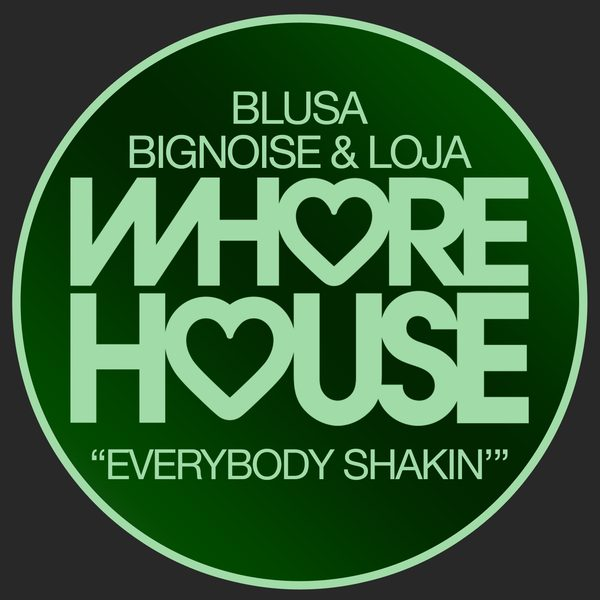

← Tutte le puntate
Crossover #91.
Data di uscita Il radioshow
Dove
Radio WowFM, Emilia-Romagna · il lunedì alle 14
Radio Super SoundFM, Sardegna · il sabato
Stardust Radioweb
I 20 dischi
 1
Hide AwayVINAI & LA Vision
1
Hide AwayVINAI & LA Vision
 2
Pull ItBenny Benassi x Vedo x Raiche
2
Pull ItBenny Benassi x Vedo x Raiche
 3
Tainted LoveJude & Frank, Cammora
3
Tainted LoveJude & Frank, Cammora
 4
Up All NightOFFAIAH
4
Up All NightOFFAIAH
 5
Talamanca - Cristoph RemixBURNS
5
Talamanca - Cristoph RemixBURNS
 6
Every Song - Saffron Stone RemixDuvall feat. bshp
6
Every Song - Saffron Stone RemixDuvall feat. bshp
 7
Nine Ways - Shadow Child Bak 2 Skool RemixJDS
7
Nine Ways - Shadow Child Bak 2 Skool RemixJDS
 8
Make It ThroughLow Steppa
8
Make It ThroughLow Steppa
 9
Feels Like StarsDiego Donati, Frank_Hernandez
9
Feels Like StarsDiego Donati, Frank_Hernandez
 10
Rise Up 2021Yves Larock x Steff Da Campo
10
Rise Up 2021Yves Larock x Steff Da Campo
 11
High LowDon Diablo
11
High LowDon Diablo
 12
RushingGil Sanders
13
For youP0P Culture & Dj Siar
12
RushingGil Sanders
13
For youP0P Culture & Dj Siar
 14
Tik TokAlexander Cruel & Loris Buono
14
Tik TokAlexander Cruel & Loris Buono
 15
RevelryPAX
15
RevelryPAX
 16
DriftSyn Cole
16
DriftSyn Cole
 17
Always YoursJoshwa
17
Always YoursJoshwa
 18
Take Me AwayJewelz & Sparks vs. Futuristic Polar Bears
18
Take Me AwayJewelz & Sparks vs. Futuristic Polar Bears
 19
AwakeningMonocule & Nicky Romero
19
AwakeningMonocule & Nicky Romero

20 Everybody Shakin'Blusa, BigNoise & LojaLa tracklist
- 1 Hide Away VINAI & LA Vision Time Records
- 2 Pull It Benny Benassi x Vedo x Raiche Ultra Records
- 3 Tainted Love Jude & Frank, Cammora One Seven Music
- 4 Up All Night OFFAIAH Defected Records
- 5 Talamanca - Cristoph Remix BURNS FFRR
- 6 Every Song - Saffron Stone Remix Duvall feat. bshp Armada Music
- 7 Nine Ways - Shadow Child Bak 2 Skool Remix JDS Armada Music
- 8 Make It Through Low Steppa Armada Music
- 9 Feels Like Stars Diego Donati, Frank_Hernandez Idol Experience
- 10 Rise Up 2021 Yves Larock x Steff Da Campo Spinnin' Records
- 11 High Low Don Diablo Hexagon
- 12 Rushing Gil Sanders Fresh Squeeze
- 13 For you P0P Culture & Dj Siar Hexagon
- 14 Tik Tok Alexander Cruel & Loris Buono BRING THE KINGDOM
- 15 Revelry PAX Defected Records
- 16 Drift Syn Cole Spinnin' Records
- 17 Always Yours Joshwa Sink or Swim
- 18 Take Me Away Jewelz & Sparks vs. Futuristic Polar Bears MAXXIMIZE
- 19 Awakening Monocule & Nicky Romero Protocol Recordings
- 20 Everybody Shakin' Blusa, BigNoise & Loja Whore House Recordings